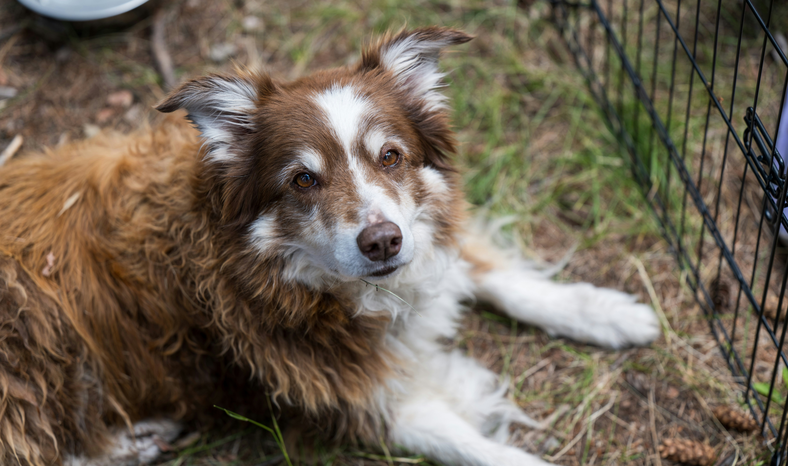
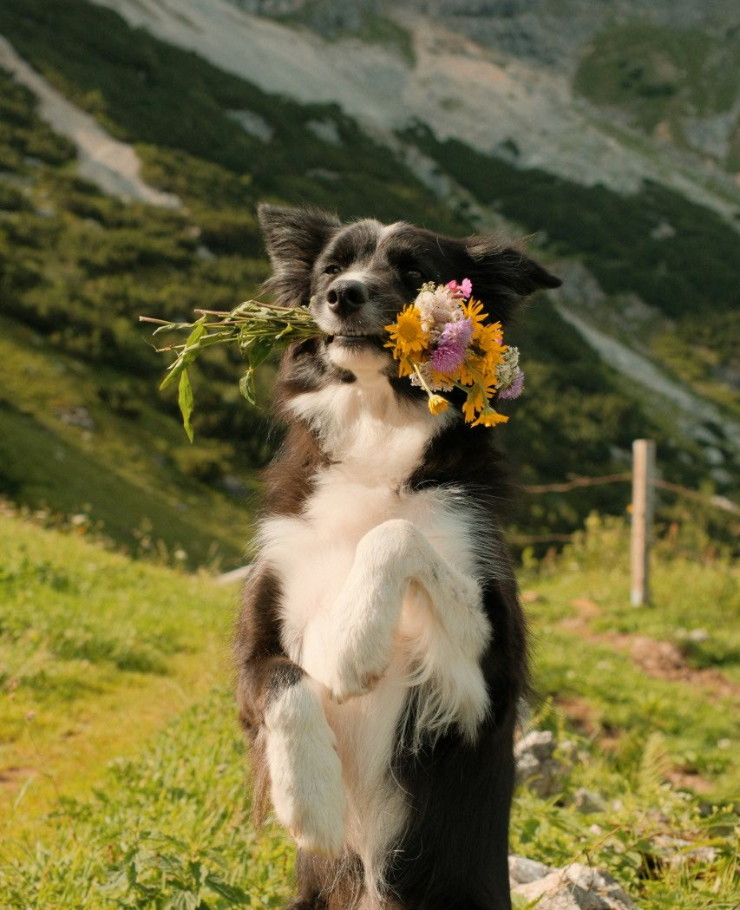
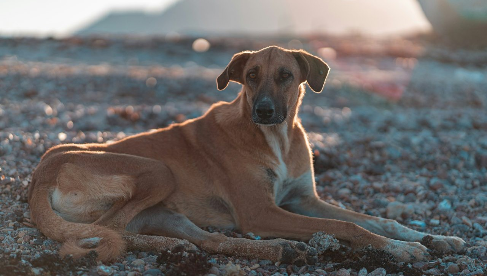
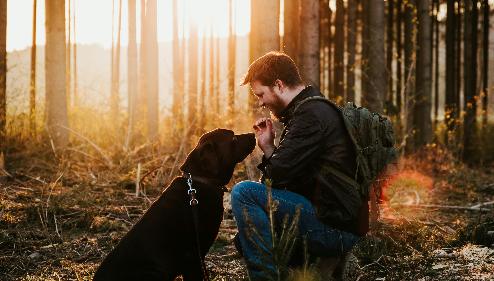

Mitä kotihoito tarkoittaa?
Kotihoito on rescue-toiminnassa käytetty toimintamalli, jonka avulla koirille pyritään löytämään pysyvä koti turvallisesti ja niiden yksilölliset tarpeet huomioiden. Kotihoitoon tuleva koira sijoitetaan vapaaehtoisen kotihoitajan luokse, jossa se asuu siihen asti, kunnes sille löytyy sopiva loppuelämän koti. Kotihoito tarjoaa koiralle mahdollisuuden tutustua tavalliseen kotielämään ja samalla yhdistykselle tilaisuuden oppia tuntemaan koiran luonnetta, käyttäytymistä ja mahdollisia tuen tarpeita paremmin.
Kotihoitajan tehtävänä on huolehtia koiran päivittäisestä hyvinvoinnista sekä seurata sen sopeutumista uuteen ympäristöön. Hän pitää säännöllisesti yhteyttä yhdistyksen yhteyshenkilöön ja kertoo koiran kuulumisista, käyttäytymisestä sekä mahdollisista terveyteen liittyvistä huolenaiheista. Yhdistys puolestaan vastaa sopivan kodin etsimisestä, adoptioprosessista ja kotiehdokkaiden haastatteluista. Kotihoitaja voi myös osallistua koiran kodin etsimiseen esimerkiksi jakamalla sen esittelyä omissa sosiaalisen median kanavissaan tai yhdistyksen Facebook-ryhmässä.

Kotihoitajana toimiminen on vapaaehtoistyötä, eli siitä ei makseta palkkaa. Yhdistys vastaa kuitenkin yleensä koiran eläinlääkärikuluista ja voi sopimuksen mukaan korvata myös esimerkiksi ruokaan ja tarvikkeisiin liittyviä kustannuksia. Käytännöt kannattaa aina tarkistaa kyseiseltä yhdistykseltä ennen kotihoidon aloittamista. Myös kotihoitajien ikävaatimukset ja muut ehdot voivat vaihdella yhdistyksittäin.
Millaisia koiria kotihoitoon tulee?

Kotihoitoon tulevat koirat voivat olla hyvin erilaisista lähtökohdista, ja sijoituksen taustalla voi olla useita syitä. Osa koirista saapuu Suomeen suoraan tarhalta. Tällöin kotihoitopaikka voi olla erityisen tärkeä esimerkiksi koirille, jotka kärsivät tarhaolosuhteissa voimakkaasta stressistä, ovat poikkeuksellisen arkoja tai tarvitsevat tavallista enemmän yksilöllistä huomiota ja sosiaalistamista. Myös nuoria koiria voidaan pyrkiä siirtämään kotiympäristöön mahdollisimman varhain, jotta ne pääsevät totuttelemaan tavalliseen elämään ja erilaisiin arjen tilanteisiin. Rauhallinen koti voi olla tärkeä vaihtoehto myös koirille, jotka eivät viihdy muiden tarhalla elävien koirien seurassa.
Toisinaan kotihoitoon saapuu koira nopealla aikataululla niin sanotulta varasijalta. Tällainen tilanne voi syntyä esimerkiksi silloin, kun Suomeen saapuvassa kuljetuksessa on vapaa paikka, joka halutaan hyödyntää. Varasijalle tulevalle koiralle saattaa olla jo alustavasti tiedossa kiinnostunut adoptioperhe, jolloin se voi siirtyä kotihoidosta omaan kotiinsa hyvinkin nopeasti.

Kotihoitoa tarvitaan myös uudelleensijoitustilanteissa. Uudelleensijoituskoiralla tarkoitetaan koiraa, joka on jo adoptoitu, mutta jonka ensimmäinen koti ei olekaan osoittautunut sille sopivaksi. Tällöin koira voidaan sijoittaa väliaikaisesti kotihoitoon, jossa sen tilanteesta, käyttäytymisestä ja tarpeista pyritään saamaan realistisempi kokonaiskuva ennen uuden kodin etsimistä. Tällaiset koirat voivat olla aiemman muutoksen tai kuormittavien kokemusten vuoksi stressaantuneita ja ylivirittyneitä. Siksi ne saattavat tarvita erityisen rauhallisen ympäristön sekä kotihoitajan, jolla on kokemusta esimerkiksi aroista tai stressiherkistä koirista. Joissakin tapauksissa sopiva hoitopaikka on esimerkiksi rauhallisella alueella sijaitseva omakotitalo, jossa koiralle voidaan järjestää tarvittaessa oma erillinen tila.
Saako kotihoitaja itse valita hoidettavan koiran?

Kotihoitoon sijoitettavat koirat valitsee yleensä yhdistys, sillä sijoituksissa pyritään ensisijaisesti huomioimaan koirien yksilölliset tarpeet ja kiireellisyys. Päätökseen vaikuttavat esimerkiksi koiran stressitaso tarhaolosuhteissa, terveydentila, ikä ja mahdollinen kiireellinen tarve päästä pois nykyisestä ympäristöstään. Uudelleensijoitustapauksissa huomioidaan myös koiran aiemmassa kodissa ilmenneet haasteet ja se, millaista tukea se tarvitsee.
Vaikka yhdistys vastaa koiran sijoittamisesta, kotihoitajan omat toiveet ja valmiudet otetaan aina huomioon. Esimerkiksi kotihoitajan omat koirat voivat vaikuttaa siihen, millainen vieras koira talouteen sopii. Kerrostaloon ei välttämättä sijoiteta koiraa, joka haukkuu herkästi, ja lapsiperheeseen pyritään valitsemaan koira, jonka tiedetään suhtautuvan lapsiin turvallisesti ja luontevasti. Myös asuinympäristö, mahdollisuus koiran eristämiseen muista eläimistä sekä kotihoitajan aikaisempi kokemus vaikuttavat valintaan.

Tavoitteena on löytää mahdollisimman hyvä yhdistelmä sekä koiralle että kotihoitajalle. Koiran ei pitäisi joutua ympäristöön, joka lisää sen stressiä tai ylittää hoitajan voimavarat. Vastaavasti kotihoitajalle pyritään tarjoamaan koira, jonka tarpeisiin hänellä on riittävät taidot ja resurssit vastata. Siksi kotihoitajan kanssa keskustellaan yleensä jo ennen sijoitusta siitä, millainen koira hänen kotiinsa sopisi.
Mitä kotihoitajalta edellytetään?
Sitoutumista ja vastuullisuutta

Kotihoitajaksi ryhtyminen edellyttää sitoutumista koiran hyvinvointiin koko sen kotihoitojakson ajan. Hoitokoiraa tulee kohdella ja hoitaa kuin omaa lemmikkiä, vaikka sen kanssa eläminen onkin väliaikaista. Kotihoitojakson pituutta ei voi yleensä tietää etukäteen: sopiva loppuelämän koti voi löytyä jo muutamassa päivässä, mutta toisinaan koira saattaa odottaa omaa perhettään useita kuukausia.
Kotihoitaja ei myöskään voi itse päättää koiran luovuttamisesta uudelle omistajalle tai toiselle hoitajalle, vaan näistä asioista sovitaan aina yhdistyksen kanssa. Jos kotihoitoon tulee ongelmia tai hoitaja ei pysty jatkamaan tehtävässään, yhdistykseen tulee olla yhteydessä mahdollisimman pian.
Kärsivällisyyttä ja ymmärrystä

Kotihoitajan on hyvä varautua siihen, ettei hoitoon tuleva koira välttämättä osaa vielä tavallisen kotikoiran perustaitoja. Se on saattanut viettää koko elämänsä kadulla tai tarhaolosuhteissa, eikä sillä välttämättä ole kokemusta esimerkiksi sisäsiisteydestä, hihnassa kulkemisesta, yksinolosta tai kodin tavallisista äänistä ja rutiineista. Kotihoitajan tehtävänä on auttaa koiraa opettelemaan näitä taitoja rauhallisesti ja sen omaan tahtiin.
Myös sellaisilla koirilla, joilla kotikoirana elämisen perusteet ovat jo hallussa, voi olla erilaisia käyttäytymiseen liittyviä haasteita. Esimerkiksi yksinoloon, käsittelyyn, hihnakäyttäytymiseen tai uusiin ihmisiin ja tilanteisiin suhtautumiseen voi liittyä vaikeuksia. Lisäksi uuteen ympäristöön muuttaminen on koiralle suuri elämänmuutos, joka voi aiheuttaa stressiä ja epävarmuutta. Kotihoitajalta vaaditaankin kärsivällisyyttä, johdonmukaisuutta ja kykyä antaa koiralle riittävästi aikaa sopeutua.
Aktiivisuutta ja yhteistyökykyä
Kotihoitajan tekemät havainnot ovat tärkeä osa adoptioprosessia. Niiden avulla yhdistys pystyy arvioimaan, millainen koti olisi koiralle sopivin. Kotihoitaja voi esimerkiksi kertoa, miten koira suhtautuu vieraisiin ihmisiin, muihin koiriin, lapsiin, kodin ääniin ja yksinoloon.

Kotihoitajalta odotetaan myös joustavuutta mahdollisten adoptioperheiden tapaamisten järjestämisessä. Kotiehdokkaiden sopivuutta arvioivat kotihoitaja ja yhdistys yhteistyössä, ja kotihoitajan näkemyksellä koiran kanssa arjessa elävänä henkilönä on tärkeä merkitys. Varsinainen adoptioprosessi ja päätös koiran luovuttamisesta kuuluvat kuitenkin yhdistykselle.
Varovaisuutta ja huolellisuutta
Erityisesti ulkomailta saapuvien rescuekoirien kanssa turvallisuuteen tulee kiinnittää tavallista enemmän huomiota. Uusi ympäristö, vieraat ihmiset ja muuttuneet olosuhteet voivat saada koiran pelästymään, jolloin karkaamisen riski on suuri. Myös aiemmin luottavaiselta vaikuttanut koira voi säikähtää yllättävää tilannetta.

Kotihoitajan tulee noudattaa yhdistyksen turvallisuusohjeita ja huolehtia esimerkiksi siitä, että koiralla on asianmukaiset ja hyvin istuvat ulkoiluvarusteet. Tarvittaessa käytetään useampaa kiinnitystä, kuten valjaita ja pantaa, sekä kahta talutushihnaa. Koiraa ei tule päästää vapaaksi aitaamattomalle alueelle ennen kuin sen turvallisuus ja luotettavuus ovat riittävästi selvillä. Myös kodin ovien, porttien ja piha-alueen turvallisuuteen on hyvä kiinnittää huomiota.
Eläimenlukutaitoa ja halua oppia
Monet haastavista olosuhteista tulevat koirat voivat olla aluksi arkoja, epävarmoja tai voimakkaasti stressaantuneita. Osa ei välttämättä ole tottunut ihmisen kosketukseen tai tavallisiin hoitotoimenpiteisiin. Kotihoitajan on tärkeää osata tarkkailla koiran elekieltä ja tunnistaa esimerkiksi pelon, stressin ja kuormittumisen merkkejä.

Koiraa tulee osata tukea omalla toiminnalla ja antaa sille mahdollisuus edetä omaan tahtiinsa. Kaikkia tilanteita ei kannata lähestyä pakottamalla tai vaatimalla koiralta liikaa liian nopeasti. Kotihoitajalta ei kuitenkaan edellytetä valmiiksi ammattilaisen taitoja, vaan tärkeää on halu oppia, perehtyä koiran tarpeisiin ja pyytää apua yhdistykseltä tarvittaessa. Hyvä yhteistyö yhdistyksen kanssa on erityisen tärkeää silloin, kun koiran käyttäytymisessä ilmenee haasteita.
Sopivaa elämäntilannetta ja koko perheen sitoutumista
Kotihoitajuus vaatii aikaa ja mahdollisuuden mukauttaa omaa arkea koiran tarpeiden mukaan. Kotihoidossa olevan koiran kanssa voidaan joutua harjoittelemaan esimerkiksi yksinoloa, sisäsiisteyttä ja ulkoilua, joten näihin asioihin on pystyttävä varaamaan riittävästi aikaa. Erityisesti kotihoitojakson alussa koira voi tarvita tavallista enemmän läsnäoloa ja rauhallista ympäristöä.

Ennen kotihoitajuuteen ryhtymistä on tärkeää huomioida myös talouden muut jäsenet ja mahdolliset omat lemmikit. Kaikkien perheenjäsenten tulee olla valmiita ottamaan vastaan uusi, mahdollisesti erityistä tukea tarvitseva koira. Omien lemmikkien suhtautuminen vieraisiin eläimiin, mahdollisuus pitää eläimiä tarvittaessa erillään sekä kodin tilat ovat tärkeitä asioita sijoitusta suunniteltaessa.
Kotihoitajuuteen ei siis riitä pelkkä halu auttaa, vaan sen tulee sopia koko talouden elämäntilanteeseen. Hyvin suunniteltu sijoitus auttaa ehkäisemään turhia muutoksia koiran elämässä ja antaa sille parhaat mahdollisuudet sopeutua turvalliseen kotiympäristöön.
Muita huomioitavia asioita kotihoidossa
Kotihoitajan ja yhdistyksen välinen sopimus
Kotihoidon alussa kotihoitajan ja yhdistyksen välille tehdään yleensä kotihoitosopimus, jossa määritellään molempien osapuolten vastuut ja velvollisuudet. Sopimuksessa voidaan käsitellä esimerkiksi koiran hoitoon, eläinlääkärikuluihin, ruokaan ja tarvikkeisiin liittyviä käytäntöjä sekä toimintatapoja mahdollisissa ongelmatilanteissa. Sopimukseen kannattaa tutustua huolellisesti ennen koiran vastaanottamista, jotta molemmilla osapuolilla on selkeä käsitys kotihoidon käytännöistä.
Kotihoitajan ei tarvitse olla ammattilainen

Kotihoitajaksi ryhtyminen ei välttämättä edellytä aikaisempaa kokemusta rescuekoirista tai ammatillista koulutusta eläinten käyttäytymisestä. Aikaisempi koirakokemus on kuitenkin hyödyksi, sillä rescuekoirilla voi olla yksilöllisiä tarpeita ja haasteita, joiden ymmärtäminen vaatii kärsivällisyyttä. Tärkeintä on kiinnostus eläinten hyvinvointia kohtaan, halu oppia uutta sekä valmius pyytää apua yhdistykseltä silloin, kun omat taidot tai keinot eivät riitä. Yhdistys voi myös auttaa kotihoitajaa koiran tarpeiden ymmärtämisessä ja mahdollisten ongelmien ratkaisemisessa.
Kotihoidon merkitys koiran tulevaisuudelle
Kotihoito on paljon muutakin kuin väliaikainen paikka odottaa oman kodin löytymistä. Se tarjoaa koiralle mahdollisuuden toipua mahdollisista vaikeista kokemuksista, tutustua tavalliseen kotielämään ja opetella uusia taitoja turvallisessa ympäristössä. Samalla kotihoitaja oppii tuntemaan koiran persoonallisuutta, käyttäytymistä ja tarpeita erilaisissa arjen tilanteissa. Näistä havainnoista on suuri hyöty adoptioperhettä etsittäessä, sillä niiden avulla koiralle voidaan pyrkiä löytämään mahdollisimman sopiva ja pysyvä koti. Hyvin toteutettu kotihoito voi siten vähentää epäonnistuneiden sijoitusten riskiä ja auttaa koiraa sopeutumaan tulevaan perheeseensä.